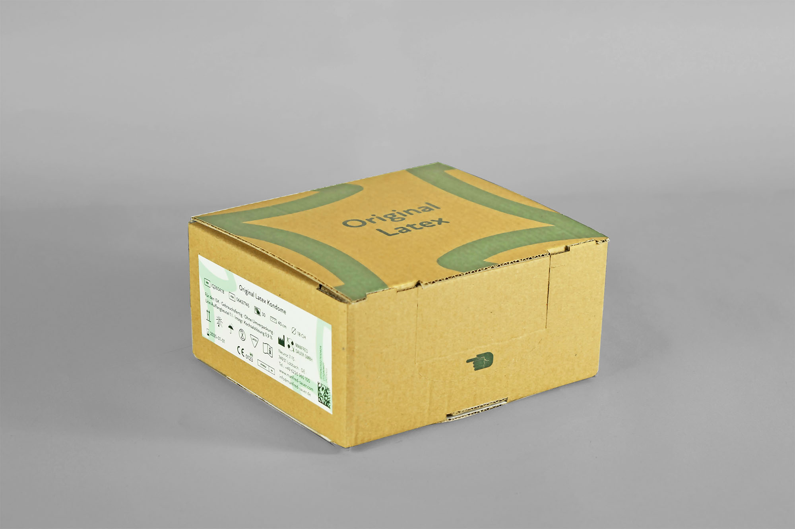
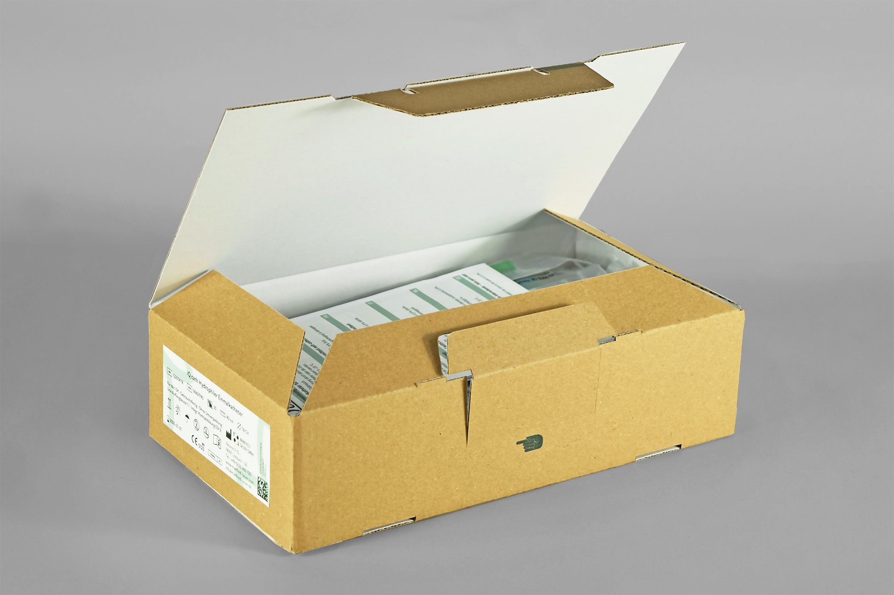
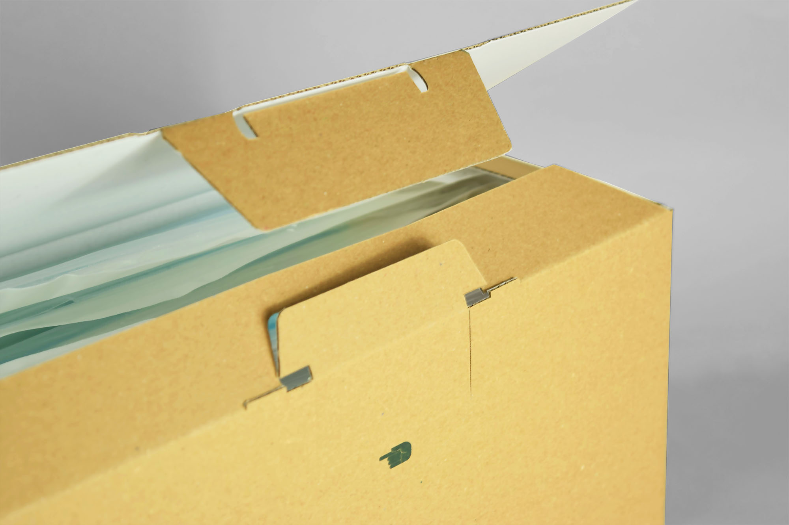

- Auftrag war ein komplettes Redesign der Katheterverpackungen von dem Medizinproduktehersteller Manfred Sauer GmbH.
- Herausforderungen
- 22 verschiedene Produkte in 9 verschiedenen Kartonformaten sollten auf maximal 5 Formate reduziert werden. Zudem soll die Verpackung nachhaltig, modern und hochwertig bei gleichbleibend hohem Wiedererkennungswert wirken. Ein Erstöffnungsschutz und schnelles einfaches Aufrichten sind Voraussetzung.
- Lösungsansatz
- Ein Automatikboden gewährleistet den gewohnten Abpackprozess, ein Originalitätsverschluss mit einrastenden Laschen den Erstöffnungsschutz und 5 teils modulare Verpackungsformate eine optimale Palettenauslastung. Die visuelle Wiedergabe des flexiblen Kugelkopfes im Logo greift das Markenkennzeichen von IQ-Cath auf und die abstrahierte Darstellung pflanzlicher Blätter erzeugt einen nachhaltigen Eindruck.
- Auftrag: Entwicklung einer Verpackung für Katheter
- Kunde: Manfred Sauer GmbH
- Entstehung: Studentische Gruppenarbeit
- Datum: Februar 2021




